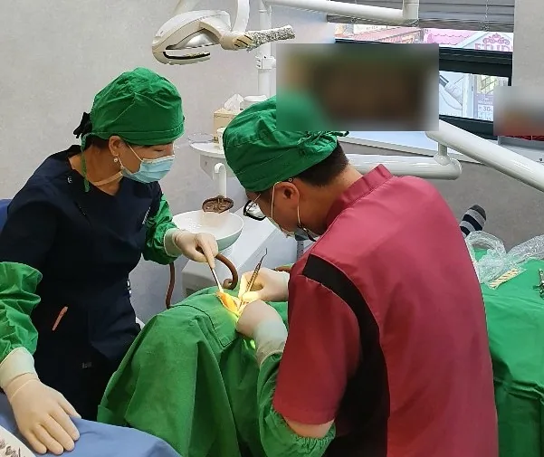

홈 › 병원 소개
병원 소개
안중사과나무치과는 1984년 문을 연 연세치과의원이 두 번의 통합을 거쳐 2007년 사과나무치과의원이 된 곳입니다. 치료 계획은 환자의 의견을 듣고 세우며, 이미 마친 치료도 계속 관리합니다(Recare).
기존 홈페이지 2026년 11월 내용 기준
연혁
- 1984연세치과의원 개원
- 1998안세치과의원 개원 (연세치과와 안중치과 통합)
- 1998 ~ 2004중국 선교지 해외 진료
- 2004베트남 치과 의료지원사업 참여
- 2005개원 20주년 기념사업 – 아름다운가게 안중점 유치
- 2002 ~ 2009이주외국인노동자 치과진료사업
- 2007사과나무치과의원 개원(안세치과와 탑치과 통합)
- 2010 ~ 현재쌍용자동차 해고노동자진료 사업 참여
- 2012건강보험심사평가원 옴부즈맨 위촉
- 2012스마일재단 주최 스마일 마라톤 대회 참가 – 구강암, 얼굴기형환자를 위한 치료비 모금
- 2014 ~ 현재아이사랑(아이의 치아사랑) – 저소득층 가정 아동 치과진료지원사업
- 2015개업 30주년 기념사업 – 더함장터
- 2016병원 리모델링
- 2019신성대학교 전문대학혁신 지원사업
진료 원칙
- 기본에 충실한 진료를 한다.
- 환자의 의견을 치료 계획에 반영한다.
- 철저한 소독을 하고 위생 및 청결을 유지한다.
- 이미 시행한 진료에 대해 지속적 관리(Recare)를 한다.
- 원장들과 위생사, 기공사들의 전문화를 추구한다.

사과나무의 뿌리 · 줄기 · 열매
뿌리
서로를 존중하는 치과
한 사람 한 사람을 소중한 사람으로, 따스한 가족과 우정 어린 친구로 서로를 존중하고 신뢰하는 것이 모든 인간관계와 사회활동의 근본이라 믿습니다.
진실함이 묻어나는 치과
진실하고 참된 태도로, 서로를 수단이 아닌 삶의 동반자로 대하는 것이 기본임을 믿습니다.
책임감 있는 치과
자식으로, 부모로서, 친구로서, 사회인으로서 지금 하고 있는 일에 책임을 다하는 것이 사회에 봉사하는 길임을 믿습니다.
줄기 — 학습하는 치과
- 병원 내 치위생사들의 교육과정을 개설한다.
- 직원들의 자기학습을 지속적으로 지원하고 격려한다.
- 원장들의 학술저널 기고를 의무화하고 장려한다.
- A/C 임플란트교육센터를 원내에 설치하고 교육한다.
- 학습과 토론을 일상화하여 진료지식과 기술수준을 높인다.
줄기 — 지역사회에 모범이 되는 조직
- 칭찬이 넘치는 치과
- 직원들이 능동적으로 경영에 참여하는 치과
- 직원들을 사회적으로 건강한 인재로 키우는 치과
- 고객, 지역주민과 지속적인 관계를 유지하는 치과
- 직원들의 자발적인 의견으로 매일 새로워지는 치과
열매
환자에게 인정받는 치과우리는 우리 스스로가 교육하며, 환자에게 인정받는 좋은 치과를 만들겠습니다.